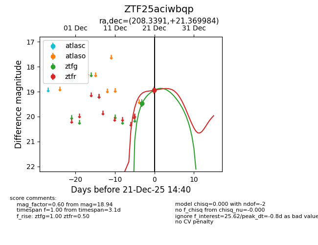
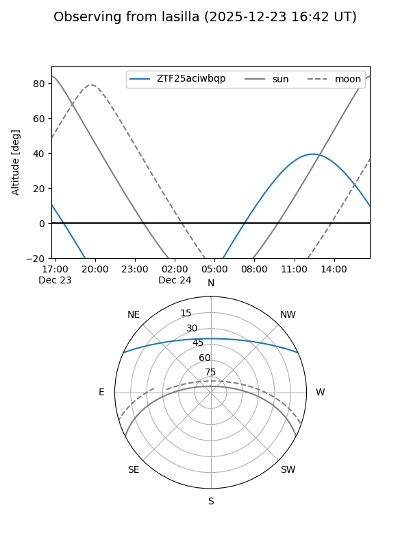
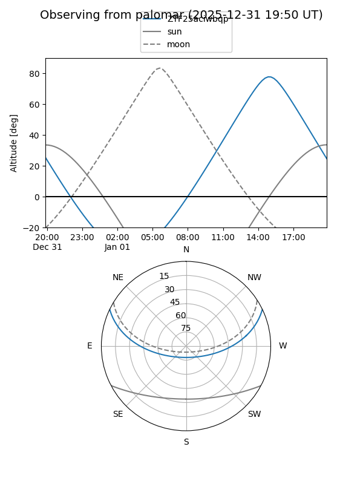
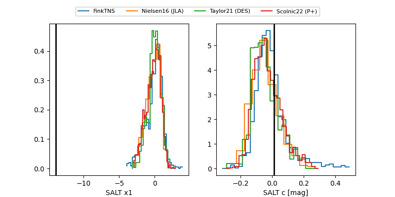

ZTF25aciwbqp
Target ZTF25aciwbqp at 2025-12-29 16:18
Aliases and brokers:
FINK: fink-portal.org/ZTF25aciwbqp
Lasair: lasair-ztf.lsst.ac.uk/objects/ZTF25aciwbqp
ALeRCE: alerce.online/object/ZTF25aciwbqp
alt names
ZTF25aciwbqp (ztf,fink_ztf)
Coordinates:
equatorial (ra, dec) = 208.3391,+21.36998
equatorial (HMS+DMS) = 13:53:21.38,+21:22:11.94
galactic (l, b) = (14.0666,+74.77234)
Flags:
Photometry:
last ztfg=18.40, ztfr=18.94
3 ztfg, 1 ztfr detections
Lightcurve

Visibility


Additional plots
